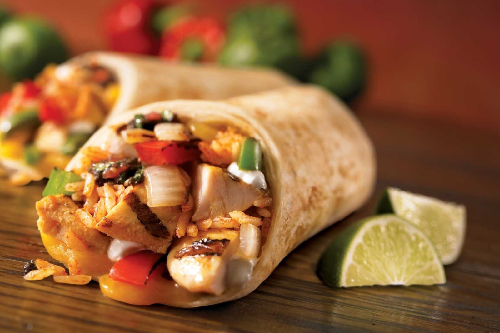
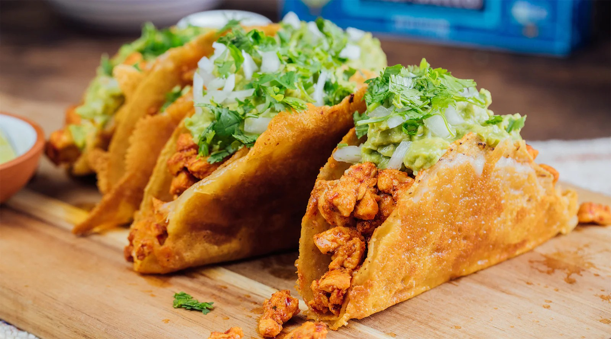
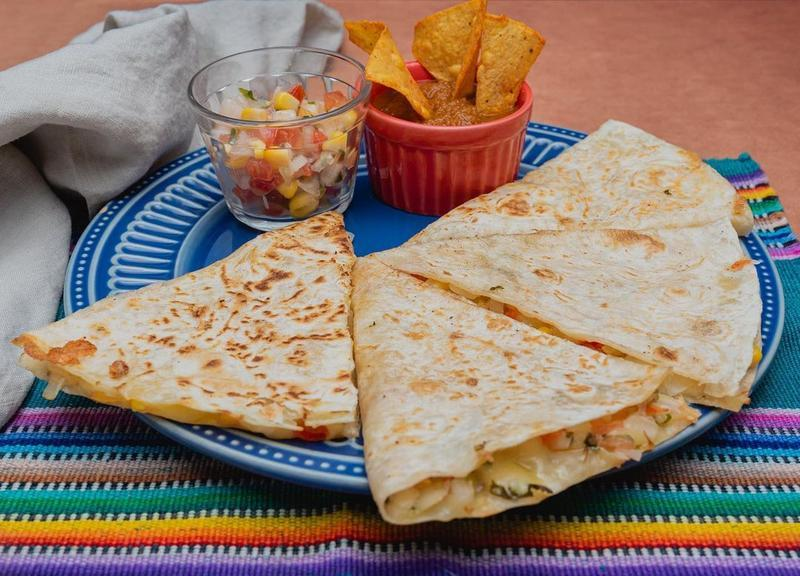

• Cremoso e suave: O abacate é o principal ingrediente, conferindo uma textura macia e aveludada, tornando o guacamole perfeito para acompanhar diversos pratos.
• Sabor fresco e vibrante: A combinação de abacate, suco de limão, coentro e cebola resulta em um sabor fresco e equilibrado, com um toque cítrico que dá leveza ao prato.
• Versatilidade: Embora a receita tradicional leve poucos ingredientes, o guacamole pode ser personalizado com pimenta, alho ou até frutas como manga, dependendo do gosto e da região.
• Culturalmente significativo: Originário do México, o guacamole é um ícone da culinária mexicana e é servido em diversos contextos, como festas, refeições informais e celebrações.
• Nutritivo: Além de ser saboroso, o guacamole é uma opção saudável, rico em gorduras boas (como as do abacate), fibras, vitaminas e minerais essenciais para o corpo.

Burrito
• Recheio variado e saboroso: O burrito é uma tortilha de trigo recheada com uma combinação de ingredientes como carne (geralmente carne moída, frango ou carne assada), arroz, feijão, queijo, guacamole e salsa, criando uma mistura rica e saborosa.
• Praticidade e portabilidade: Por ser enrolado em uma tortilha, o burrito é fácil de segurar e comer com as mãos, tornando-o uma refeição prática para comer em movimento ou em qualquer ocasião informal.
• Origem mexicana e popularidade global: Embora tenha raízes na culinária mexicana, o burrito se popularizou nos Estados Unidos e em várias partes do mundo, com adaptações locais e diferentes variações de recheios e temperos.
• Personalização: O burrito é extremamente versátil e pode ser adaptado ao gosto pessoal, seja com ingredientes vegetarianos, como guacamole e legumes, ou versões mais tradicionais com carne e queijo, sempre oferecendo uma experiência personalizada.
• Satisfatório e energético: O burrito é uma refeição bastante completa, rica em carboidratos (da tortilha e do arroz), proteínas (da carne e feijão) e gorduras (do queijo e do guacamole), sendo uma opção bem nutritiva e energética.

Tacos Al Pastor
• Recheio saboroso: Carne de porco marinada e assada com especiarias, servida em tortilhas de milho com abacaxi, cebola, coentro e salsa. Uma mistura perfeita de sabores doces, salgados e picantes.
• Praticidade: Pequenos e fáceis de comer, os tacos al pastor são ideais para refeições rápidas e informais.
• Origem mexicana e influência global: Inspirado no shawarma, trazido por imigrantes libaneses ao México, o taco al pastor se tornou um dos pratos mais populares do país.
• Personalização: Embora a receita clássica seja simples, pode ser ajustada com mais ingredientes, como guacamole ou limão.
• Sabor marcante e energético: A combinação da carne de porco com o abacaxi torna o taco al pastor uma refeição leve, mas cheia de sabor e energia.

Tortilhas
• Base versátil: Feitas de milho ou trigo, as tortilhas são a base de muitos pratos mexicanos, como tacos, burritos e quesadillas.
• Sabor neutro e textura macia: A tortilha tem um sabor leve e uma textura que combina bem com diversos recheios, desde carnes até vegetais.
• Origem mexicana: Tradicionalmente, as tortilhas são um alimento básico no México, com séculos de história.
• Personalização: Pode ser adaptada a diferentes receitas, como tortilhas de milho ou trigo, e pode ser recheada com uma variedade de ingredientes.
• Nutritiva e energética: A tortilha é rica em carboidratos, oferecendo energia rápida e sendo uma refeição satisfatória.